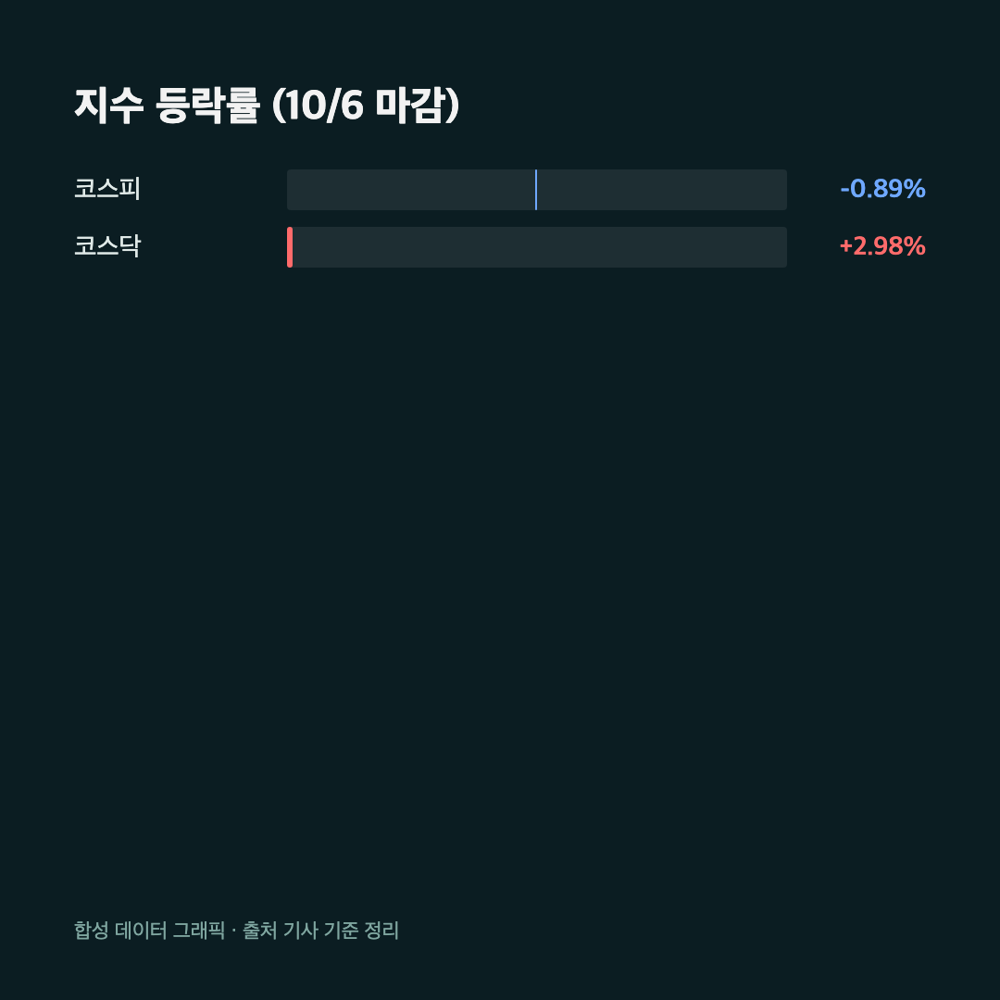
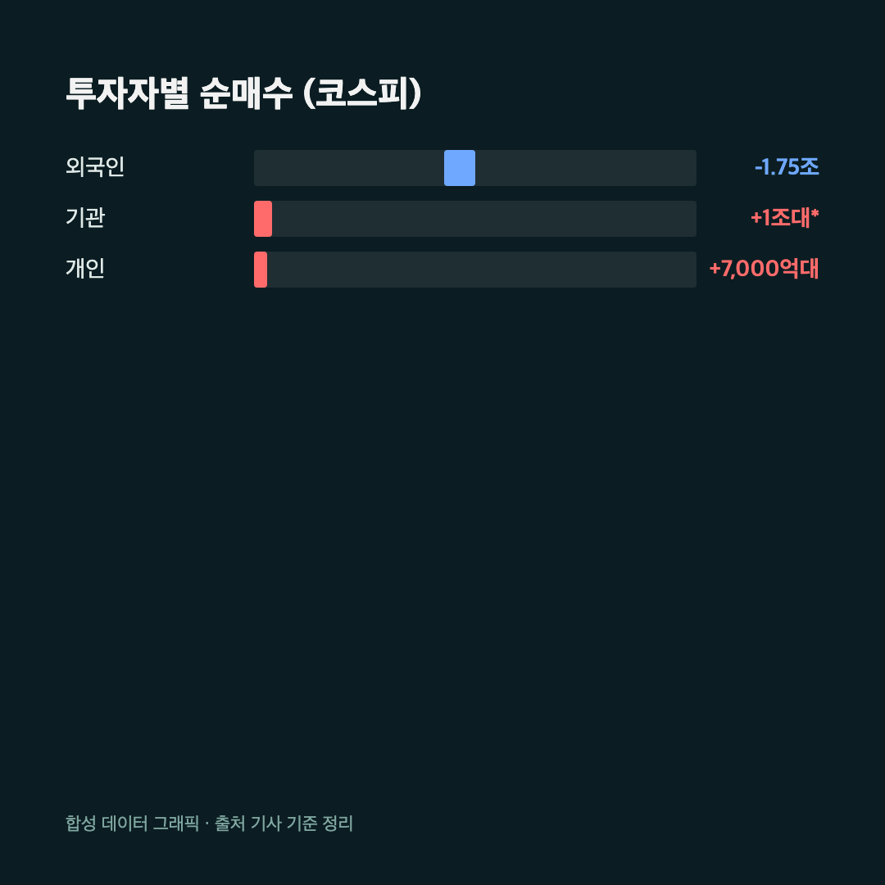
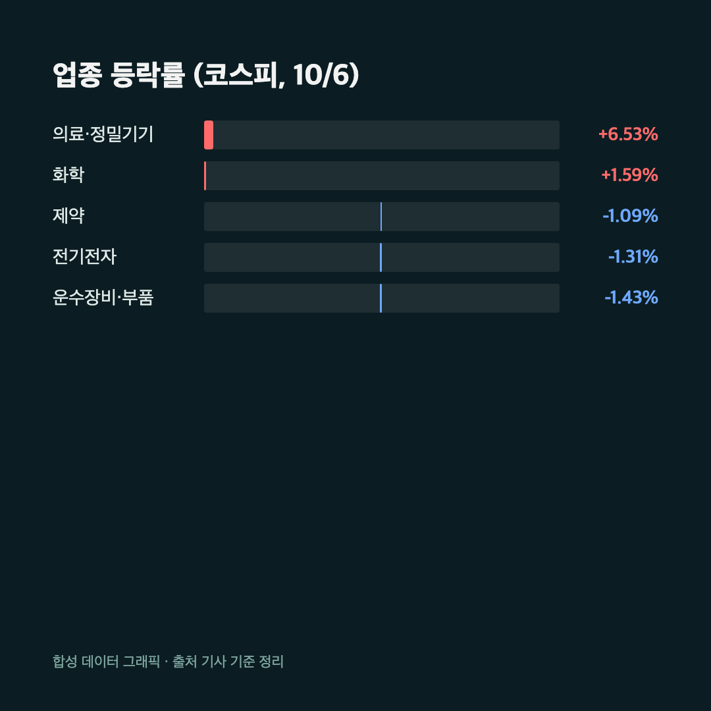

연휴 끝나고 화요일 개장하자마자 코스피가 7,000선을 한 번 넘었다가 바로 밀려버렸어요. 삼성전자를 25주 들고 있는 저로선 신경이 쓰이는 장면이었어요.
오늘은 10월 6일 국장 마감을 정리해볼게요. 참고로 10월 5일은 개천절 대체공휴일이라 한국 시장이 쉬었고, 오늘이 연휴 끝 첫 거래일이었어요. 직전 거래일인 10월 2일 금요일 마감 기준으로 흐름을 보면 됩니다.
📉 지수는 밀렸는데 코스닥은 반대로 뛰었어요
코스피 6,941.39 (-62.35포인트, -0.89%) / 코스닥 919.92 (+26.63포인트, +2.98%) |

개장 직후만 해도 코스피는 40포인트 넘게 오르며 7,000선 위에서 출발했어요. "오 오늘은 버티나" 했는데요, 그 상승분을 다 반납하고 결국 7,000선 아래에서 마감했습니다. 반면 코스닥은 900선을 가볍게 넘기며 3% 가까이 올랐어요. 같은 날 두 시장이 이렇게 다른 방향으로 간 건 눈에 띄는 장면이에요.
원/달러 환율은 1,343.6원으로 0.4원 내렸어요.
💸 외국인 1.7조 순매도, 받아낸 쪽은 기관과 개인

이날 지수를 끌어내린 건 외국인이었어요. 외국인이 코스피에서 약 1조 7,500억~1조 7,700억원어치를 팔았습니다. 언론마다 정확한 숫자가 조금씩 달라서 저도 두 곳을 맞춰보고 "1조 7천억원대"로 적었어요.
받아낸 쪽은 기관과 개인이에요. 기관은 소스마다 금액이 크게 차이 나요. 한쪽은 1조 100억원대, 다른 쪽은 600억원 안팎으로 보도했습니다. 그래서 기관 금액은 정확한 숫자를 단정하지 않을게요. 대신 개인은 7,000억원대 순매수로 두 소스가 거의 일치했어요. 외국인이 던진 물량을 국내 투자자들이 받아준 구도라고 보면 됩니다.
🔋 반도체 약세, 2차전지·소부장으로 자금 이동

오늘 가장 눈에 띈 건 반도체 대형주 약세예요. 삼성전자는 27만 2,000원으로 1.45% 빠졌고, SK하이닉스는 177만 3,000원으로 3.69% 내렸어요. 지수 하락의 가장 큰 무게추가 이쪽이었습니다.
반대쪽에서는 2차전지와 소부장이 올랐어요. LG에너지솔루션은 5%대, 삼성SDI는 8%대로 마감했고, 삼성전기도 5% 넘게 올랐습니다. LG전자는 7%대 급등이었어요. 코스닥이 3% 가까이 오른 것도 반도체에 몰려 있던 돈이 2차전지·소부장 쪽으로 옮겨간 영향이라는 해석이 많았어요. 다만 이건 시장 해설 수준의 풀이라서 확정된 원인처럼 말하긴 조심스러워요.
업종별로 보면 의료·정밀기기가 6%대로 가장 강했고, 화학도 강세였어요. 반대로 운수장비·부품, 전기전자, 제약은 1% 안팎으로 약했습니다.
저는 삼성전자를 들고 있어서 오늘 -1.45%가 남 얘기가 아니었어요. 그래도 반도체가 빠지는 날에 2차전지가 뛰는 장세라서, 한쪽에 몰린 포지션이면 이런 날 더 흔들리더라고요.
🔭 이번 주 변수는 삼성전자 실적
개장 기사에서 나온 얘기가 있어요. 이번 주 삼성전자 3분기 잠정실적 발표가 반도체 밸류에이션과 외국인 심리를 가를 핵심 이벤트라는 거예요. 발표 전에는 반도체 주가가 방향을 정하기 어렵다는 말이 많았고요.
제가 확실히 말할 수 있는 건 여기까지예요. 실적 숫자가 어떻게 나올지는 저도 모르고, 오늘 장에서 나온 외국인 매도가 실적 기대를 반영한 건지도 확인되지 않았어요.
마무리하며
오늘 숫자를 다시 보면, 코스피는 7,000선을 내줬고 외국인은 1조 7천억원대를 팔았어요. 그래도 코스닥은 900선 위에서 3% 가까이 올랐으니 시장이 완전히 무너진 날은 아니었어요.
솔직히 이번 주는 반도체 실적 발표 전까지 손을 대기보다 지켜보는 쪽으로 가려고요. 25주짜리 제 삼성전자가 발표 전에 또 흔들릴 것 같긴 한데, 그건 그때 가서 생각하겠습니다. 🌱